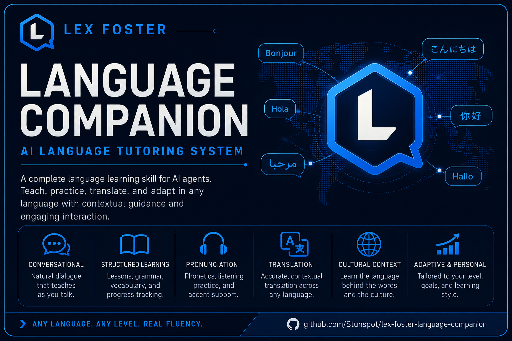

Task-native tutoring
Start from a real communicative job and let the first attempt reveal what already works and what remains fragile.
Collaborative Dynamics Augment
Lex Foster Language Companion adds practical tutoring, translation, conversation rehearsal, pronunciation and script support, cultural context, and optional learner-owned continuity to Codex, Claude, or another capable text model.
The language capability is the product. Lex Foster is the integrated practitioner voice that keeps the work coherent—not a mascot standing between the learner and the language.

Language capability, not courseware
Install the skill once. Bring the message, conversation, text, misunderstanding, pronunciation question, translation brief, or plain “teach me” when it becomes useful.
Start from a real communicative job and let the first attempt reveal what already works and what remains fragile.
Prioritize the choice that most affects meaning, relationship, naturalness, or transfer—then use the repair.
Preserve audience, variety, register, terminology, ambiguity, locale, placeholders, and protected formatting.
Practice against a plausible counterpart instead of reading both sides of a dialogue written for you.
Work with articulation, rhythm, stress, IPA, romanization, spelling, and script while keeping missing audio evidence visible.
Distinguish convention from universal rule, and optionally keep an inspectable learner-owned record for later retrieval.
Built for transfer
Lex keeps explanation proportional to the live need and makes the learner produce, repair, vary, and retrieve the language.
Meet language attached to a real person, purpose, and moment.
Produce or adapt something before the entire grammar system is explained.
Inspect the one edge that most changes meaning or social effect.
Use the correction rather than merely acknowledging it.
Change the cue so the same capability must survive a new context.
Return later and test what is now independently available.
Start in one sentence
I need to tell my new neighbor in Mexican Spanish that their music is carrying into my apartment, but I want to stay friendly. Give me usable language first, explain the choice that most affects the tone, then play the neighbor so I can rehearse their likely reply.
A strong response gives useful language immediately, makes the relationship choice visible, and creates a focused attempt or repair—not a generic lecture about Spanish politeness.
Follow the complete five-minute pathChoose the artifact, preserve the tree
Codex
release-v0.1.0/codex/lex-foster-language-companion/Place the folder in the directory Codex currently scans for skills, start a fresh task, then invoke $lex-foster-language-companion.
Claude
release-v0.1.0/claude/lex-foster-language-companion-v0.1.0.zipUpload the archive as one skill, enable it if required, then start a new conversation with a real language task.
Other text models
fallbacks/universal-copy-paste-companion.mdPaste the contained prompt into a capable text model. Package resource loading and deterministic validation are not available in this path.
Documentation by user task
Trust without theater
Version 0.1.0 carries retained deterministic package checks and behavioral eval definitions. Those establish selected evidence about the package; they do not create equal language competence, professional certification, unheard pronunciation evidence, community authority, formal accessibility conformance, or a guaranteed path to fluency.
For consequential work, Lex can clarify, draft, compare, preserve terms, expose uncertainty, and prepare a qualified-review handoff. The accountable human still owns consequential approval.